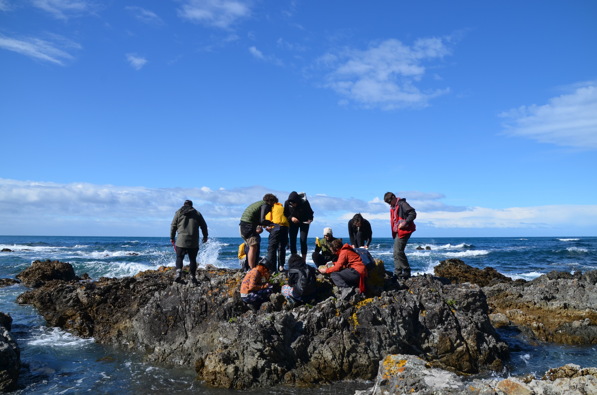
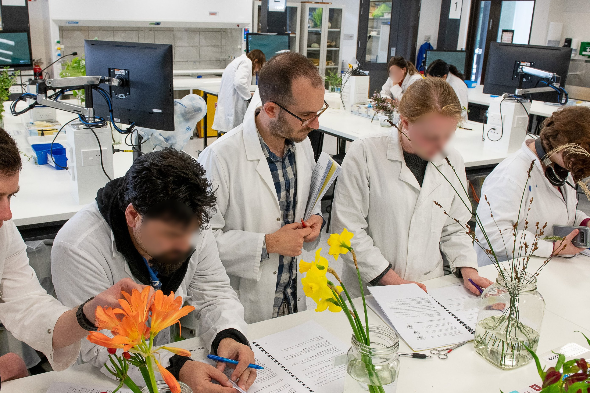

Teaching
Over the past seven years, I have taught a variety of courses—undergraduate and postgraduate, lab- and field-based, online and in person. Whether as a teaching assistant or as a lecturer, the key themes were always the same: empathy, inclusiveness, and equity. Scroll down for the full list!
 Conservation Biology (2024) - Lecturer, University of British Columbia. Taught conservation biology to fourth-year students, covering the major threats to biodiversity, their impacts, and key management and mitigation strategies.Invasion Ecology (2023) - Guest Lecturer, University of British Columbia. Taught Invasion Ecology to students from diverse backgrounds, delivering an overview of the topic tailored to each class. 
New Zealand flora and fauna (2021) - Course Coordinator, Te Herenga Waka - Victoria University of Wellington. Field-based introductory course on New Zealand flora and fauna. Students learned to identify and describe common plants and birds, observe and recognize patterns, and formulate and test hypotheses.
Island Ecology & Evolution (2021) - Course Coordinator, Te Herenga Waka - Victoria University of Wellington. A course on the fundamental principles of island ecology, biogeography, conservation, and evolution.
Other courses (2018-2021) - Teaching Assistant (Victoria University of Wellington). Assisted in the following courses: Plant Biology, Plants and Algae: Function and Diversity, New Zealand Flora and Fauna, Ecology and Environment, Island Ecology and Evolution, Landscape Architecture Sites and Systems.